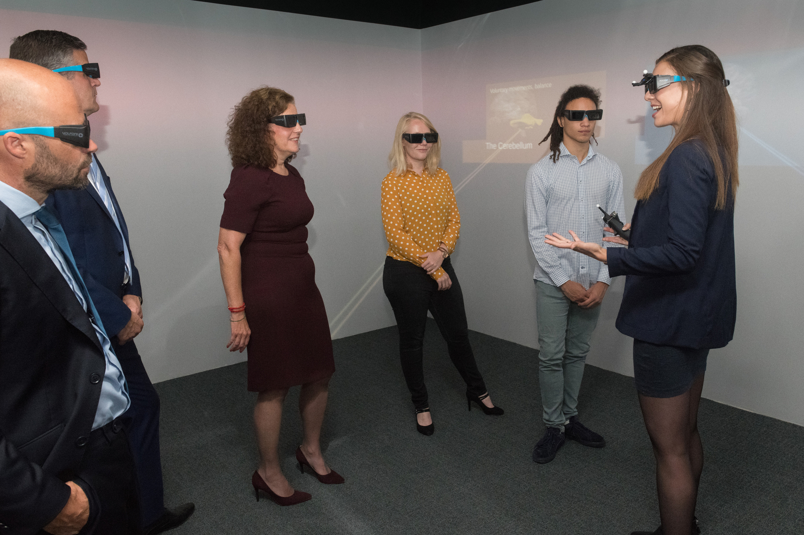

Professional biography

I received my BSc in Cognitive and Neurobiological Psychology (cum laude) and my MSc in Neuroscience and Cognition from Utrecht University. During and after my studies I worked on research projects at Utrecht University, the Max Planck Institute for Psycholinguistics, Philips and TNO. Within a couple of months, I will finish my PhD thesis in Cognitive Science and Artificial Intelligence at Tilburg University. My PhD thesis will be the result of a collaboration with 33 industrial partners and a range of experimental studies examining the physiological underpinnings of learning and training and related experiences in virtual environments. During the wide range of research projects I was involved in I gained experience in working with different types of subjects including patient groups and in applying cutting-edge techniques such as virtual and mixed reality and multiple techniques of measuring human physiology, ranging from eye-tracking to electroencephalography.
Photo on the right by Wilfried Scholtes.